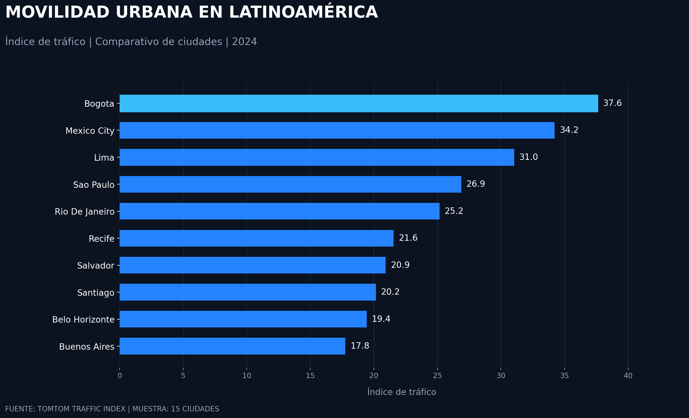
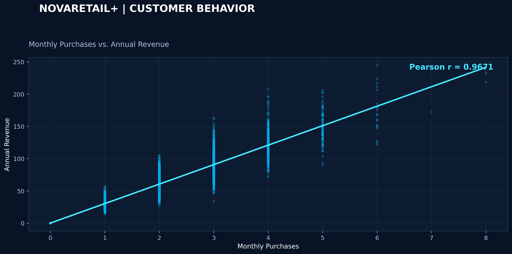

Python
Limpieza, exploración, análisis y visualización de datos.
PANDAS · MATPLOTLIBSoy Joel Serrato, Ingeniero Industrial enfocado en análisis de datos y Business Intelligence. Combino experiencia en planeación de producción con herramientas analíticas para convertir información en acciones.
La tecnología aporta valor cuando ayuda a resolver problemas reales.
Mi trayectoria en entornos de manufactura, converting y packaging me ha permitido conocer de cerca los retos de operación, productividad, planeación y cumplimiento. Hoy complemento esa experiencia con análisis de datos para descubrir patrones, medir resultados y apoyar mejores decisiones.
Limpieza, exploración, análisis y visualización de datos.
PANDAS · MATPLOTLIBConsultas, transformación de datos, joins y análisis.
QUERYING · CTE · WINDOW FUNCTIONSIndicadores, reportes interactivos y seguimiento de KPIs.
DASHBOARDS · DAXAnálisis operativo, modelos, reportes y automatización.
PIVOT TABLES · FORMULASCasos de análisis que conectan datos, hallazgos y oportunidades de mejora.

01Exploración de indicadores urbanos para identificar relaciones, patrones y diferencias entre ciudades de Latinoamérica.
Ver repositorio ↗
02Espacio para documentar un caso de análisis SQL: objetivo, preparación de datos, consultas, resultados e implicaciones de negocio.
Explorar GitHub ↗Nota: los títulos y descripciones de los proyectos deben validarse contra los resultados y archivos reales antes de publicar la versión definitiva.
Mi experiencia en planeación de producción me permite interpretar los indicadores desde el contexto operativo: capacidad, demanda, inventarios, productividad y cumplimiento.
Estoy abierto a oportunidades en Data Analytics y Business Intelligence.